|
FC
Twente - Roda JC (0-1) 7 oktober 2007
|
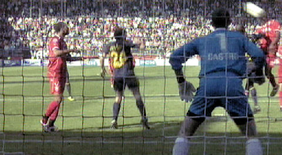
Roda begint met een op vier plaatsen gewijzigd elftal vergeleken met dat van
vorige week tegen Excelsior met Kah, Sibum en Sonkaya voor van Kouwen, Tioté en
De Jong. Verder is Meeuwis terug van een blessure.
Roda verdedigt, Twente heeft balbezit. Na drieëntwintig minuten is hier de
eerste
goede kans voor Twente. Een kopbal van N'Kufo die door Castro gepakt wordt.
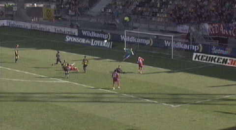
Op slag van rust krijgt Wilkshire de bal perfect aangespeeld door El Ahmadi maar
de Australiër schiet hoog over het doel.
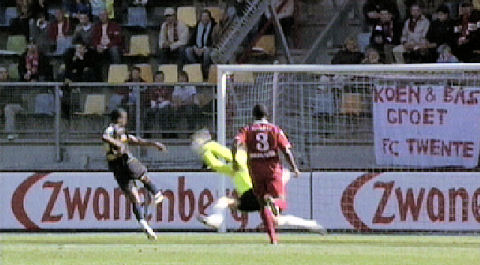
Al meer dan een uur onderweg als een schot van Matondo door Boschker geblokt
wordt. 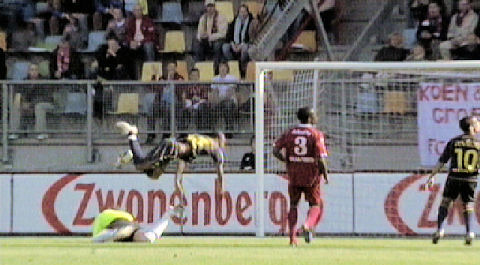
Daarbij maakt Yulu een mooie zweefduik.
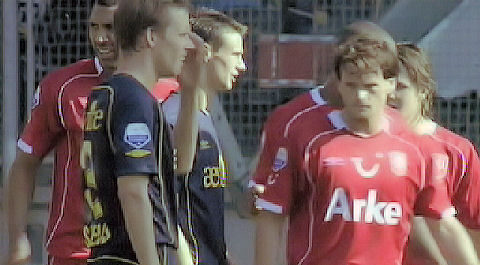
Roda gaat een hoekschop nemen.
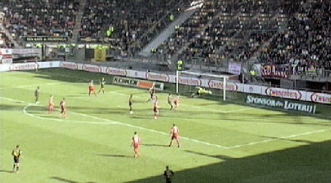
Bodor neemt de hoekschop welke afgeslagen wordt. Vervolgens brengt de Hongaar
de bal opnieuw voor het doel waarbij De Fauw de bal oppikt en deze bij de eerste
paal voorbij Boschker weet te tikken: 0-1, (71').
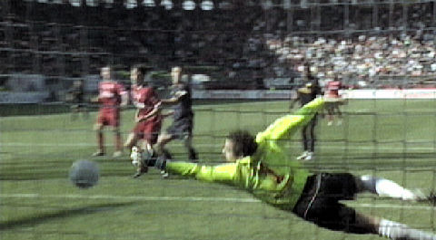
Gezien vanachter de goal.
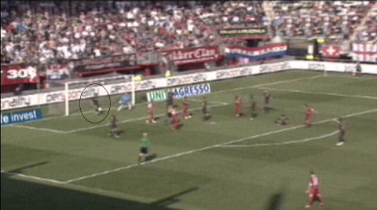
In de laatste twee minuten wordt het enorm spannend. Meeuwis maakt een schot
van Wielaert onklaar op de doellijn.
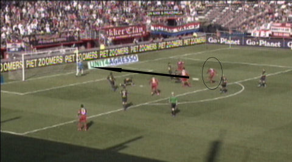
Bijna 94 min. gespeeld als Castro een keihard schot van Denneboom keert.
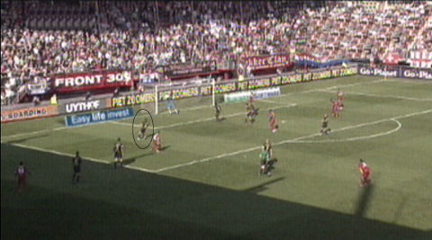
Even later redt Castro op een schot van Heubach.
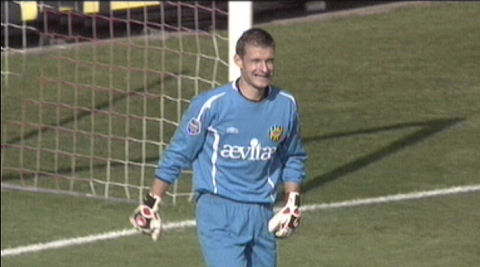
M.O.T.M. 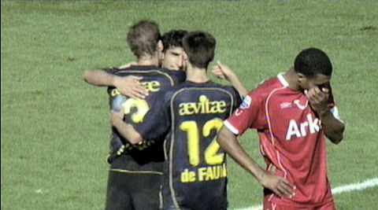
Engelaar baalt terwijl Sonkaya, Saeijs en De Fauw weten dat Roda hier heel goed
is weggekomen.
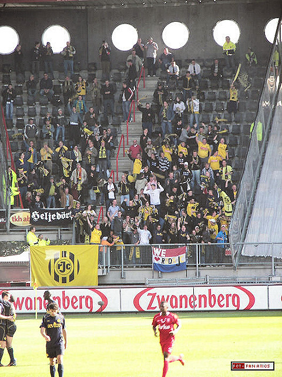
Roda bezorgt FC Twente de eerste thuisnederlaag van dit seizoen.
Scheidsrechter: Blom.
Toeschouwers: 13.000
Geel : Wellenberg (FC Twente), Hadouir, Sibum (Roda JC)
Scoreverloop: 71’ De Fauw 0-1
Opstelling FC Twente: Boschker, Wellenberg, Wielaert, Braafheid, Heubach,
Wilkshire (68’ Brama), Engelaar, El Ahmadi (80’ Arnautovic), Denneboom, N’Kufo,
Hersi (55’ Elia).
Opstelling Roda JC: Castro, De Fauw, Kah, Saeijs, Sonkaya, Bodor, Sibum, Meeuwis,
Hadouir (84’ Janssen), Yulu-Matondo, Lamah (85’ Cissé).
© Koempels Pleasure Dome
|